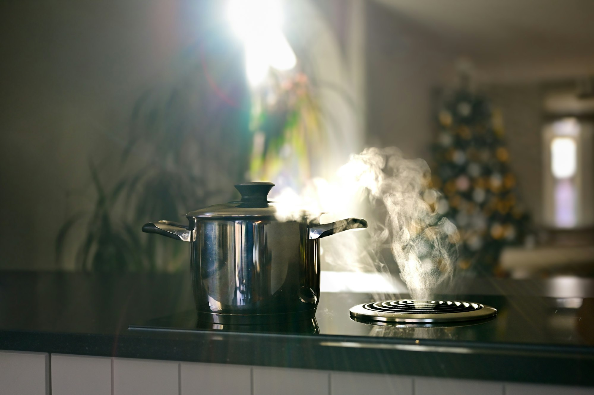

Chrome using too much memory? What your tabs cost
Short answer
Every open tab keeps its page in memory, so a long tab strip is usually the biggest cost. Open Chrome's Task Manager (Shift+Esc on Windows and ChromeOS, or ⋮ → More tools → Task manager on any computer) to see which tabs use the most. Turn on Memory Saver in Settings → Performance so Chrome frees memory from tabs you aren't using. To cut the cost for good, close the tasks you aren't working on, in a way you can bring back.

See what each tab uses
Chrome's Task Manager lists every tab, extension and helper process with how much memory it uses. Open it with Shift+Esc on Windows and ChromeOS, or from the ⋮ menu: More tools → Task manager. Click the Memory footprint column to put the biggest at the top.
Video, maps, design tools and big web apps usually lead the list. To free one at once, select it and press End process: the tab stays in the strip and reloads when you click it.
What Memory Saver does
Memory Saver, in Settings → Performance, frees memory from tabs you haven't looked at for a while. The tab stays where it is in the strip; when you click it, Chrome loads it again. If you're midway through something on a site, add it under Always keep these sites active so Chrome leaves it alone.
It helps the computer, and it leaves the tab strip just as long. Sleeping tabs still have to be scanned past every time you look for one.
Other things that use memory
- Extensions. Each one shows up in the Task Manager. Remove the ones you no longer use.
- Several windows of the same work. Two windows with the same web app open run it twice.
- Pages that keep playing. Video and live dashboards keep working in the background.
Close what you aren't working on, and keep it
The tabs that cost the most are often the ones you keep open "for later": a trip half planned, a purchase half decided. Closing them frees the memory for good. The reason people don't is that closing a tab feels like losing it, and with it the other tabs that went together.
Simmer handles both halves. It can put tabs you haven't used for a while to sleep, like Memory Saver. And it sorts your tabs into the things you're in the middle of, so you can put a whole task on the back burner: its tabs are saved, then close, and one click brings every one back, in its group. Mail, chat and calendars stay open, and everything Simmer does can be undone.
For why the strip gets long in the first place, see too many tabs open in Chrome.
Questions
- How many tabs can Chrome handle?
- There's no fixed limit. It depends on your computer's memory and on the pages: a dozen heavy web apps can cost more than a hundred simple articles. Chrome's Task Manager shows what each tab uses.
- Does Memory Saver close my tabs?
- No. The tabs stay in the strip; Chrome frees their memory and loads them again when you click them. Sites you add under Always keep these sites active are left alone.
- How do I open Chrome's Task Manager on a Mac?
- From the ⋮ menu choose More tools, then Task manager. On Windows and ChromeOS the shortcut is Shift+Esc.
- Does putting tabs away in Simmer free memory?
- Yes. Putting a task on the back burner closes its tabs, after saving them, so Chrome frees their memory. Bring back reopens them when you need them.